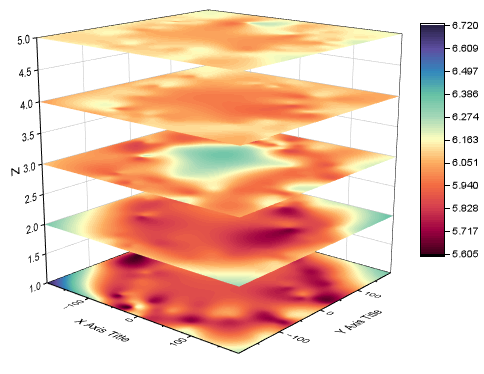

Gestapelte 3D-Oberflächendiagramme
3D-Stacked-Surfaces

Datenanforderungen
- Gezeichnet auf Grundlage eines Arbeitsblatts:
- (1) Sie benötigen XYZ-Daten und eine weitere Referenzspalte, um die XYZ-Spalten in verschiedene Gruppen aufzuteilen.
- (2) Sie benötigen XYZZ...-Daten und eine Spaltenbeschriftungszeile, um die Heatmaps auf der Z-Achse zu positionieren.
- Die XY-Daten sollten ein M*N-Gridding haben. Origin konvertiert jeden XYZ-Block in eine Matrix mit Hilfe der Gridding-Methode Regulär. Wenn die Daten nicht regulär sind, wird die Gridding-Methode Dünn verwendet, um die XYZ-Daten zu konvertieren.
- Gezeichnet auf Grundlage einer Matrix:
- Sie benötigen mindestens drei Matrixobjekte im gleichen Matrixblatt.
Diagramm erstellen
Aktivieren Sie das Arbeits- oder Matrixblatt.
Wählen Sie im Menü .
- Für Arbeitsblattdaten wird der Dialog plot_xyz3dstack geöffnet, genauso wie für gestapelte 3D-Heatmaps.
- Für Matrixdaten zeichnet Origin die Matrixobjekte direkt als flache Oberflächen.
Vorlage
glStackedSurf.otpu (installiert im Origin-Programmordner)
Notizen
- Alle Oberflächen sind abgeflacht und die Positionswerte auf der Z-Achse werden von der Option Quelle des Z-Werts gesteuert.
- Wenn Ihre Arbeitsblattdaten nicht regulär oder dünn sind, können Sie XYZZ...-Daten direkt als 3D-Oberflächen mit Farbabbildung zeichnen (Zeichnen > 3D: 3D-Oberfläche mit Farbabbildung) und sie dann auf Flache Oberflächen setzen.